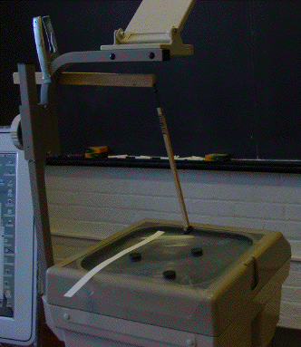

| Glue a straight pin to a button, glue the button to a magnet, and stick the pin into a balsa wood rod. |
| Attach the balsa wood rod to another balsa wood rod with a fishing swivel. |
| Use a carpenter's clamp to attach the second basa wood rod to the overhead projector. |
|  |
| Balsa wood pendulum |
Return to Procedure